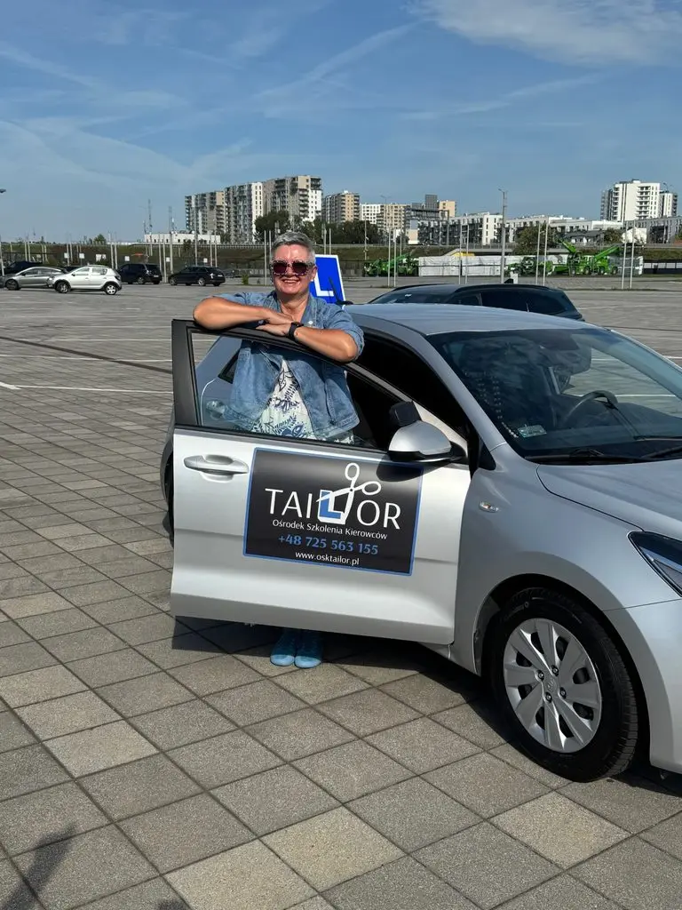
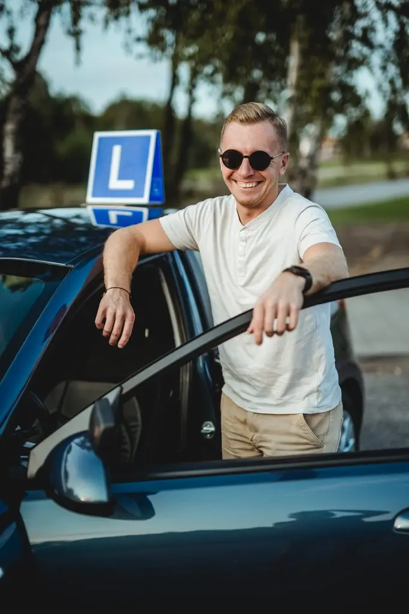

Poznaj nas: instruktorzy nauki jazdy OSK Tailor w Gdańsku
Poznaj ludzi, którzy tworzą OSK Tailor. Bez presji, w Twoim tempie i z uśmiechem: tak wygląda u nas kurs prawa jazdy szyty na miarę.
Najpierw poznajmy się bliżej
Każda dobra jazda zaczyna się od zaufania. Poznaj naszą ekipę.

Iza Kunc
Kierownik OSK Tailor | Instruktorka nauki jazdy
„Styl mam własny, cierpliwość ogromną, a poczucie humoru zawsze na pokładzie. Wsiadaj! Jedziemy!”
Cześć! Jestem Iza i pokażę Ci, że nauka jazdy może być nie tylko skuteczna, ale też pełna uśmiechu i dobrej energii.
Podczas jazd stawiam na cierpliwość, luźną atmosferę i sporą dawkę humoru. Wiem, że początki bywają stresujące, dlatego u mnie możesz pytać o wszystko, popełniać błędy i uczyć się we własnym tempie. Bez presji i zbędnych nerwów!
Mam swój charakter, oryginalny styl i lubię wyróżniać się z tłumu. Bo kto powiedział, że instruktor musi być zawsze śmiertelnie poważny? 😉
Za uśmiechem i żartami kryje się jednak konkretne podejście do nauki. Zależy mi, żebyś nie tylko zdał egzamin, ale przede wszystkim poczuł się pewnie i bezpiecznie za kierownicą.
A jeśli usłyszysz „No dobra, jeszcze raz!”, spokojnie: to znak, że jesteśmy coraz bliżej perfekcji!

Michał Krawiec
Właściciel OSK Tailor | Instruktor nauki jazdy
„Cześć! Jestem Michał i pomogę Ci poczuć się pewnie za kierownicą.”
Motoryzacja to moja pasja, którą od lat z przyjemnością łączę z pracą instruktora nauki jazdy.
Z doświadczenia wiem, że dobry instruktor to nie tylko osoba, która zna przepisy i potrafi nauczyć prowadzenia samochodu. To również ktoś, kto potrafi słuchać, cierpliwie tłumaczyć i wspierać kursanta na każdym etapie szkolenia.
Spokój, cierpliwość i indywidualne podejście to fundament mojej pracy. Każdy uczy się w swoim tempie, dlatego stawiam na przyjazną atmosferę, jasne wskazówki i naukę bez niepotrzebnego stresu.
Moim celem jest przygotowanie Cię nie tylko do zdania egzaminu państwowego, ale przede wszystkim do samodzielnej, świadomej i bezpiecznej jazdy. Dobrze przeprowadzone szkolenie sprawia, że pozytywny wynik egzaminu staje się naturalnym efektem zdobytych umiejętności.
Poza pracą pasjonuję się motoryzacją i autodetailingiem. Lubię dbać o samochody, ich wygląd i najmniejsze detale.
Magda Krawiec
Serce biura OSK Tailor | Instruktorka nauki jazdy
„W biurze pilnuję terminów, a za kierownicą właściwego kierunku!” 😉
Cześć! Jestem Magda i to właśnie ze mną najczęściej spotkasz się na początku swojej przygody z OSK Tailor.
Na co dzień dbam o to, żeby wszystko w naszej szkole działało jak dobrze naoliwiony silnik. Zapisy, terminy, dokumenty i milion pytań? Spokojnie, ogarniam! 😎
Czasem zamieniam biurko na fotel instruktora, wspierając naszą ekipę podczas jazd.
Uczymy jeździć. Nie tylko zdawać.
W OSK Tailor liczą się umiejętności, spokój i pewność siebie.
Bez presji
Masz prawo pytać, ćwiczyć i uczyć się we własnym tempie.
Indywidualnie
Dopasowujemy naukę do Twoich potrzeb i możliwości.
Po ludzku
Jesteśmy rodzinną szkołą, w której liczy się dobra atmosfera.
Tu nauka jazdy jest po Twojemu
Manual czy automat? Pierwsza lekcja czy jazdy doszkalające? Niezależnie od punktu startowego przeprowadzimy Cię przez naukę krok po kroku. Szkolimy w Gdańsku, w życzliwej atmosferze i bez niepotrzebnych nerwów. Mamy średnią 4,9 ze 143 opinii w Google, a w II półroczu 2025 r. nasza zdawalność w PORD Gdańsk mieściła się w TOP 10 szkół.
Gotowy na pierwszą jazdę?
Odezwij się do nas, a wspólnie wybierzemy dobry start.